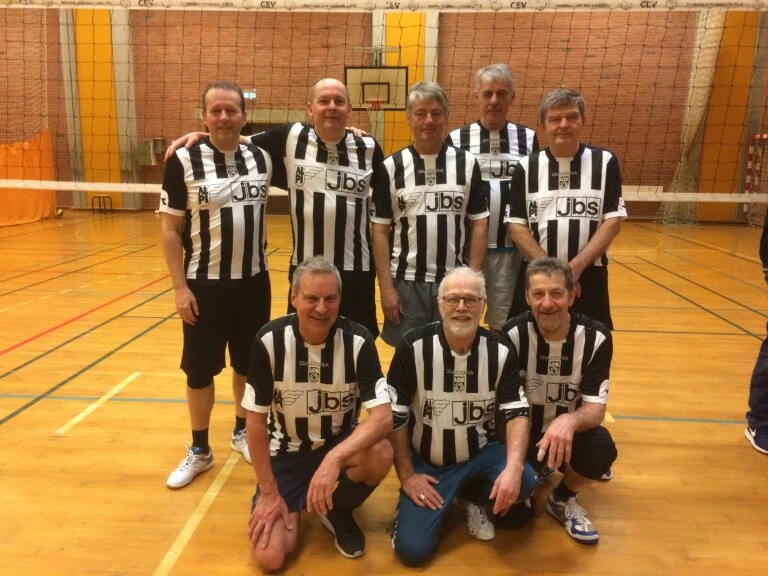
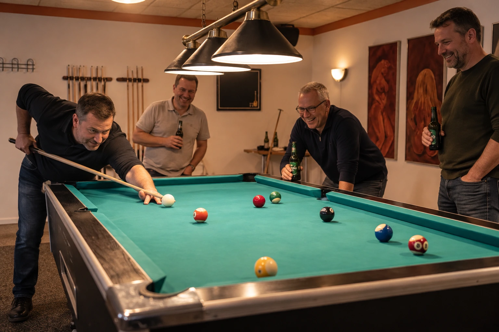

LIND OLD BOYS · SIDEN 1969
Vi er mere end en fodboldklub. Vi er et fællesskab for mænd i Lind og omegn, hvor der er plads til både sport, hygge og gode oplevelser.

Lind Old Boys er et fællesskab for mænd på 28+ i Lind og omegn. Her mødes vi om sociale aktiviteter, gode oplevelser og hyggeligt samvær. Du behøver ikke være fodboldspiller for at være med. Det vigtigste er lysten til fællesskab.
Du behøver ikke spille fodbold for at være en del af LOB. Vi samles om sociale aktiviteter, gode oplevelser og hyggeligt samvær. Her er der plads til forskellige interesser, gode venskaber og nye bekendtskaber.

Har du lyst til at møde nye mennesker og blive en del af fællesskabet i Lind? Hos LOB er der plads til dig – med eller uden interesse for fodbold.
BLIV MEDLEM